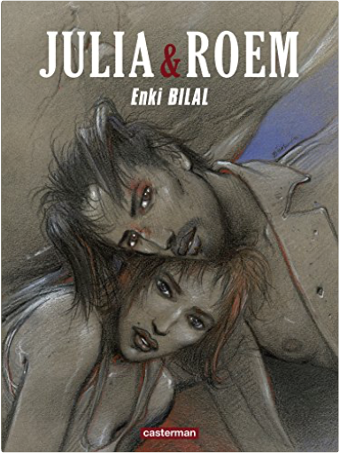
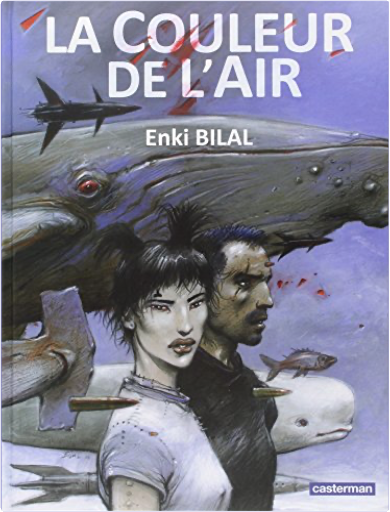

Books
Movies
Albums
Videogames
Games
BD
BD Camille
Blu-ray
Business
Camille
Comics
Cooking
Lego
Manga
Pauline
Photography
Star Wars
T'choupi
Travel
TV Shows
Un livre dont vous êtes le héro
Vinyl
Walt Disney
2
3
4
5
6
coup de sang, tome 1 : animal'z
enki bilal
graphisme épuré

coup de sang, tome 2 : julia & roem
enki bilal

coup de sang, tome 3 : la couleur de l'air
enki bilal
hammerdam, tome 1
enrique fernandez
hk, tome 1.1 : avalon
morvan, hérault
4.5
hk, tome 1.1 : avalon
morvan, hérault
4.5
hk, tome 1.2 : élysée
morvan, hérault
5
hk, tome 1.3 : caldera
morvan, hérault
5
hk, tome 1.4 : paradiso
morvan, hérault
ken games, tome 0 - louviers
robledo, toledano
ken games, tome 1 : pierre
robledo, toledano
4.5
ken games, tome 2 : feuille
robledo, toledano
4.5
2
3
4
5
6


 Made with Delicious Library Made with Delicious Library
Made with Delicious Library Made with Delicious Library